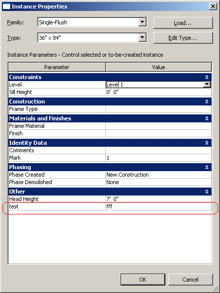
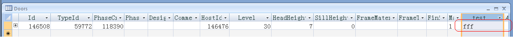

Adding a Column to RDBLink
Probably the most complex Revit SDK sample of all is the RDBLink one. We mentioned it briefly in Anthony Hauck's note on integration with a database or ERP system, but provided no additional details. Like all the SDK samples, RDBLink comes with its own readme document, which is actually a lot more extensive than most others due to the size and complexity of this sample. In brief, RDBLink demonstrates how to export Revit model data into an ODBC database and how to import data back from a database into Revit, possibly modifying or creating new Revit elements. Here is a simple question on that topic, answered by my colleague Joe Ye:
Question: I am using RDBLink to export Revit data to a database. I would like to add a few custom columns to the generated tables. How can I do that?
Also, when I dump the data, it overwrites all the previous data. Can I append data to existing tables?
Answer: First the short answer to your second question:
Unfortunately, RDBLink cannot append to existing tables. It always synchronises the Revit document with the exported database.
It is however possible to add custom columns to the exported database. Which table do you want to add columns to? Would you please tell me the table name?
Question: I would like to add a column "Facility Id" to the tables:
- CurtainSystems
- DistributionSystems
- DuctSystems
- FurnitureSystems
- PipingSystems
- [dbo].[ElectricalEquipment]
Answer: To add the columns you require, you can add shared parameters to the respective elements. Then RDBLink will automatically generate new columns populated by the values of these shared parameters. The readme file ReadMe_RDBLink.rtf provides more information on this:
Create shared parameters: In the database editing form, user can add shared parameters to current document, and after that new fields in the related tables for the elements will be created, user can give values to these new fields. After importing, these new parameters will be updated.
Question: I am quite new to this. Can you please give me some more details? Is there some other documentation available for it?
Answer: I just tested adding a shared parameter named 'test' to all doors in a project document and then called the RDBLink external command to export the model data to an access database file. The database contains a new column 'test' generated by this shared parameter, and populates it with the shared parameter values. Here is the parameter that I added to the Revit BIM:

Here is the exported data displayed in the database table:

The shared parameter can be created using the Revit user interface. The command is described in the Revit product help file HelpArchitectureENU.chm in the Program subfolder, where you can find it through Revit Architecture 2010 User's Guide > Customizing Project Settings > Custom Parameters.
Thank you, Joe, for these answers!
Shared parameters can also be created programmatically, and here are some pointers to previous posts on related topics: